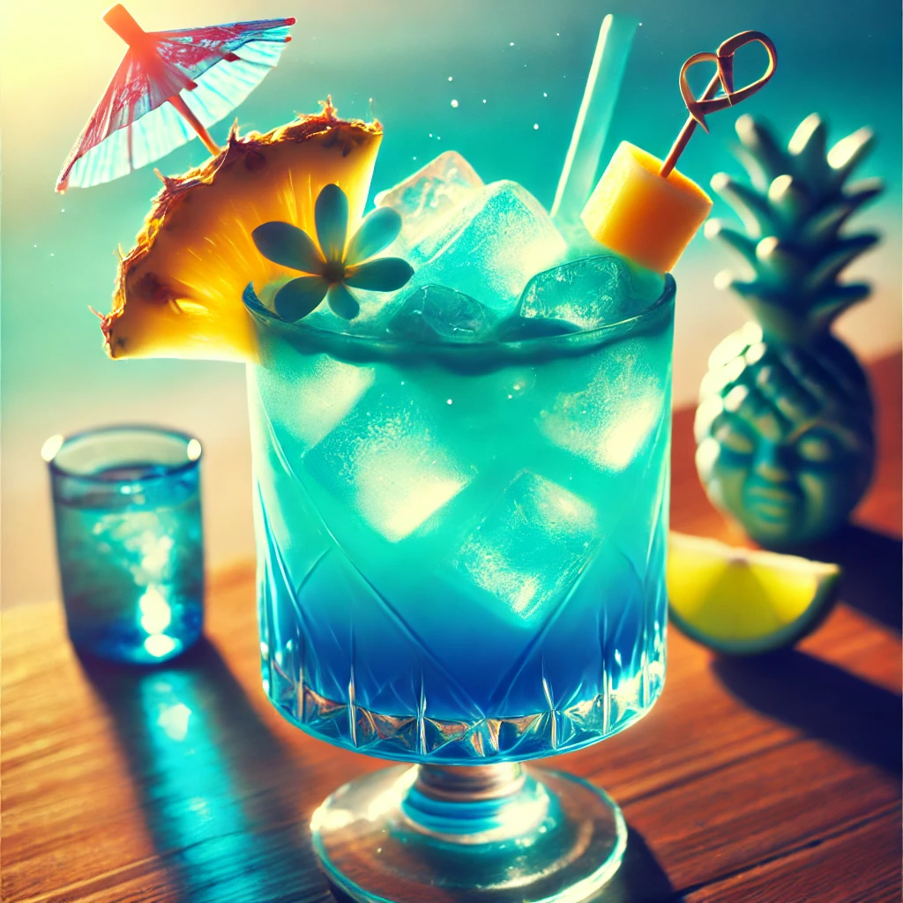

THE BUSTY MERMAID

Mermaid’s Kiss
Ingredienser og Oppskrift:
Velkommen til Mermaid’s Kiss – en drink som får deg til å føle at du er blitt kysset av havets skjønnhet og magi! Denne glitrende og forførende drinken har akkurat den rette balansen mellom sødme og friskhet, og den gir deg en smakfull flukt til en tropisk strand – langt unna hverdagen.
Så, hva inneholder denne mystiske drikken? Her er oppskriften på å lage et kyss fra havet:
- 1 del **vodka** (denne ingrediensen er garantert å sette deg i humør for eventyr)
- 1 del **blå curacao** (for den perfekte havblå fargen som minner om mermaids i solnedgang)
- 1 del **fersk limejuice** (frisk som sjøbrisen)
- 1 del **ananasjuice** (som en solskinnsdag på en tropisk øy)
- 1 skvett **kokosmelk** (for den myke, drømmende smaken av kokosnøtt, som minner om den søte brisen ved sjøen)
Hvordan lage denne drinken:
- Fyll en shaker med is, og tøm alle ingrediensene oppi.
- Rist det hele som om du er ute på et eventyr i stormen!
- Sil drinken i et glass fylt med is, og pynt med en liten limebit eller en ananasskive.
- Skål og nyt smaken av havet, du mermaid, du!
OBS: Denne drinken er kjent for å få folk til å føle seg som ekte havfruer – drikk med forsiktighet, og kanskje vær forberedt på å danse på bordene!